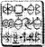

FOWL MALİKÂNESİ
İRLANDA'YA önemli bir olay olmadan ulaştılar. Ama Mulch, Holly’nin gözaltından on beş kez kaçmaya çalıştı. Bunlara bir keresinde Lear Jet’te tuvalette bir paraşüt ve cüce kaya cilası olduğunu keşfettiği de dahildi. Ondan sonra Holly onun gözünden uzaklaşmasına izin vermedi.
Kâhya onları Fowl Malikânesinin ön kapısında bekliyordu.
“Hoş geldiniz. Herkesi sağlam gördüğüme sevindim. Şimdi benim gitmem gerekiyor.”
Artemis elini onun koluna koydu.
“Eski dostum. Sen bir yere gidebilecek durumda değildin.”
Kâhya kararlıydı. “Son bir görev, Artemis. Başka seçeneğim yok. Zaten ağırlık çalışmaya başladım. Kendimi çok daha hazır hissediyorum.”
“Pervasız mı?”
“Evet.”
“Ama o hapishanede,” diye itiraz etti Juliet.
Kâhya kafasını iki yana salladı. “Artık değil.”
Artemis korumasının yolundan döndürülemeyeceğini görebiliyordu.
“En azından yanma Holly’yi al. Yardımı olabilir.” Kâhya elfe göz kırptı. “Ben de buna güveniyordum.”
Chicago polisi Pervasız Arno’yu birkaç memurla beraber bir kamyonete koymuştu. Suçlu kelepçeli ve zincirli olduğu için iki kişinin yeterli olacağını görüşüne varmışlardı. Kamyoneti Chicago’nun altı mil güneyinde, memurlar kelepçelenmiş ve sanıktan hiçbir iz yokken bulduklarında bu fikri yeniden gözden geçirdiler. Çavuş Iggy Lebowski’nin raporundan alıntılar: “Adam o kelepçeleri sanki kâğıttan bir zincirmiş gibi koparttı. Üzerimize buharlı bir tren gibi geldi. En ufak bir şansımız bile olmadı.”
Ama Pervasız Arno temiz bir şekilde kaçamamıştı. Gururu Spiro İğnesinde çok kötü yaralanmıştı. Aşağılanma haberinin kısa zamanda koruma dünyasında yayılacağım biliyordu. Domuz Göbek LaRue daha sonraları Paralı Asker web sitesinde böyle yazacaktı. “Uyanık bir velet Arno’nun işini gördü.” Pervasız sıkı heriflerle dolu bir yere ne zaman girse duyacağı kahkahalarla karşılaşacağından acı bir şekilde haberdardı; tabii ki Artemis Fowl’dan bu hakaretin intikamını almadığı sürece.
Koruma, Spiro’nun adresini Chicago polisine vermeden önce sadece dakikaları olduğunu biliyordu, bu yüzden birkaç yedek protezini aldı ve O’Hare Uluslararası Havaalanına yollandı.
Pervasız otoritelerin Spiro’yla ortak kredi kartını henüz dondurmadığını fark edince sevindi. Londra Heatrow’a. British Airways Concorde’la bir inci sınıf bir bilet almak için onu kullandı. Oradan Rosslare feribotuyla İrlanda’ya girebilirdi. Leprechaunlar ülkesini ziyaret eden beş yüz turistten biri olacaktı.
Bu çok fazla karışık bir plan değildi ve bir şey olmasaydı işe yarayacaktı: Heatrow’daki pasaport memuru Sid Commons’du, Kâhya’yla Monte Carlo’da beraber korumalık yapan şu eski Yeşil Bere. Pervasız’ın ağzını açmasıyla beraber Commons’un kafasında alarm zilleri çalmaya başladı. Önündeki beyefendi, Kâhya’nın ona faksladığı tanıma birebir uyuyordu. Ta acayip dişlerine kadar. Mavi yağ ve su, eğer rahatsız olmazsanız. Commons masanın altındaki bir düğmeye bastı ve birkaç saniye içinde bir tim güvenlik görevlisi Pervasızı pasaportundan kurtarıp nezarete aldılar.
Tutuklu kilit altına alınır alınmaz güvenli şefi cep telefonunu çıkardı. Uluslararası bir numara çevirdi. İki kez çaldı.
“Fowl Malikânesi.”
“Kâhya? Ben Sid Commons, Heatrow’dayım. Buraya ilgilenebileceğin bir adam geldi. Komik dişleri, boyun dövmesi, Yeni Zelanda aksam var. Dedektif Justin Barre birkaç gün önce Scotland Yard’dan tanımını yollamıştı; onu tanımlayabileceğini söyledi.”
“O hâlâ yanınızda mı?” diye sordu Kâhya.
“Evet. Geçici hücrelerimizden birinde duruyor. Şu anda onunla ilgili bir araştırma yapıyorlar.”
“O iş ne kadar sürer?”
“En fazla birkaç saat. Eğer söylediğin profesyonel o ise bilgisayardan hiçbir şey çıkmayabilir. Onu Scotland Yard’a teslim etmemiz için bir itirafa ihtiyacımız var.”
“Otuz dakika sonra Geliş salonundaki Gidiş tabelasının altında buluşacağız,” dedi Kâhya, bağlantıyı keserek.
Sid Commons cep telefonuna bakakaldı. Kâhya İrlanda’dan buraya otuz dakikada nasıl gelebilirdi? Sid’in bildiği tek şey Kâhya’nın onun hayatını Monte Carlo’da bir düzine defa kurtarmış olmasıydı ve şimdi borcun geri ödenme zamanı gelmişti.
Otuz iki dakika sonra, Kâhya, Geliş salonunda gözüktü.
Sid Commons el sıkışırlarken onu baştan aşağı inceledi.
“Farklı görünüyorsun. Daha yaşlı.”
“Savaşlar beni yıpratıyor,” dedi Kâhya, inip kalkan göğsüne bir avucunu koyarak. “Sanırım, emeklilik zamanı geldi.”
“Buraya nasıl geldiğini sormamın bir anlamı var mı?”
Kâhya kravatını düzeltti. “Yok. Bilmesen daha iyi olur.”
“Anladım.”
“Adamımız nerede?”
Commons, onu turist güruhlarını ve taksi şoförlerinin arasından geçirip binanın arkasına götürdü.
“Buradan gidiliyor. Silahlı değilsin, değil mi? Dost olduğumuzu biliyorum ama burada ateşli silaha izin veremem.”
Kâhya ceketini iyice açtı. “Bana güven. Kuralları biliyorum.”
Güvenlik asansöründen iki kat yukarı çıktılar ve millerce uzunluktaymış gibi gelen loş ışıklı bir koridoru takip ettiler.
“İşte geldik,” dedi en sonunda Sid, cam bir dikdörtgeni işaret ederek. “Orada.”
Cam aslında iki taraflı bir aynaydı. Kâhya, Pervasız Arno’nun bir masada oturup, parmaklarının formika kaplamada sabırsızca trampet çaldığını görebiliyordu.
“O mu? Knightsbridge’de seni vuran adam o mu?” Kâhya başıyla onayladı. Bu kesinlikle oydu. Aynı uyuşuk ifade. Tetiği çeken aynı eller.
“Olumlu tanıma hiç yoktan iyi bir şeydir ama senin söylediğin pek anlamlı değil, doğrusunu söylemek gerekirse hiç de vurulmuşa benzemiyorsun.”
Kâhya elini arkadaşının omzuna koydu. “Bence-” Commons onun bitirmesine bile izin vermedi. “Hayır. Oraya giremezsin. Kesinlikle olmaz. Kesinlikle işimden olurum ve zaten ona itiraf ettirsen bile asla mahkemede bir işe yaramaz.”
Kâhya başıyla onayladı. “Anladım. Burada kalmamın bir mahsuru var mı? Bu işin sonunun nereye varacağını görmek istiyorum.”
Commons coşkuyla kabul etti, Kâhya’nın onun zorlamamasından rahatlamıştı.
“Sorun yok. İstediğin kadar burada kal. Ama sana bir ziyaretçi kartı almam lazım.” Koridorda uzun adımlarla gitti ve geri döndü.
“İçeri girme, Kâhya. Eğer girersen onu sonsuza kadar kaybederiz. Zaten her yer kamera dolu.”
Kâhya güven verici bir şekilde gülümsedi. Bu sık yapmadığı bir şeydi.
“Merak etme, Sid. Beni o odada görmeyeceksin.” Commons iç çekti. “İyi. Harika. Bazen gözünde o bakış olduğunda...”
“Artık farklı bir adamım. Daha olgunlaşmış.” Commons güldü. “Zamanı gelmişti.”
Köşeyi döndü, kıkırdamaları havada çınlıyordu. O gider gitmez Holly, Kâhya’nın bacağının yanında kalkanını kaldırdı.
“Kameralar?” diye ağzının kenarından fısıldadı koruma.
“İyon ışınları kontrol ettim. Burada görünmüyorum.” Sırt çantasından bir kamuflaj folyosu çıkarıp yere serdi.
Sonra bir filmi bir kabloya sarıp hücrenin dış duvarına yapıştırdı.
“Tamam,” dedi, kulağında Foaly’nin sesini dinleyerek. “İçeri girdik. Foaly kameradaki görüntülerimizi sildi. Artık kamera ve mikrofonlar bize ulaşamazlar. Ne yapacağını biliyor musun?”
Kâhya başıyla onayladı. Bunu daha önce çalışmıştı ama Holly bir asker olarak ikinci kez kontrol etmek istemişti.
“Tekrar kalkanımı kaldırıyorum. Harekete geçmek için bana bir saniye ver, sonra folyoyu ört ve yapacaklarını yap. Sana en fazla iki dakika veriyorum, arkadaşın dönmeden. Ondan sonra kendi başınasın.
“Anlaşıldı.”
“İyi şanslar,” dedi Holly, görünen tayftan titrek ışıkla parıldayarak çıktı.
Kâhya bir saniye bekledi, sonra sola iki adım attı. Folyoyu aldı ve üzerine örttü. Sıradan geçen biri için artık görünmezdi. Ama koridorda yoluna çıkan bir olursa, korumanın cüssesinin bir parçası folyonun altından çıkabilirdi. Hücrenin kapısındaki kilidi açtı ve içeri girdi.
Pervasız Arno aşırı derecede endişeli değildi. Bu pek bir şey değildi. Tanrı aşkına yeni, takma dişlerinden dolayı burada ne kadar tutulabilirdi ki? Daha fazla olmayacağı kesindi. Belki İngiliz hükümetine travmadan dolayı dava açabilir ve emekli olup Yeni Zelanda’daya gidebilirdi.
Kapı otuz santimetre açıldı, sonra tekrar kapandı. Pervasız iç çekti. Bu eski bir sorgucu numarasıydı. Mahpusu birkaç saat terlet, sonra kapıyı açıp yardımın yolda olduğunu düşünmesini sağla. İçeri hiç kimse girmediğinde mahpus büyük bir depresyona girecektir. Bu çözülme noktasına en yakın andı.
“Pervasız Arno,” dedi nereden geldiği belli olmayan bir ses.
Pervasız parmaklarıyla trampet çalmayı bıraktı ve doğruldu.
“Bu da ne?” diye dudak büktü. “Burada hoparlör mü var? Bu acemice, beyler. Gerçekten acemice.”
“Senin için geldim,” dedi bir ses. “Skoru eşitlemek için geldim.”
Pervasız Arno bu sesi taşıyordu. Chicago’dan beri bunun düşünü görüyordu; İrlandalı veledin Kâhya’nın geri geleceği hakkında onu uyardığından beri. Tamam, bu saçmaydı; hayalet diye bir şey yoktu. Ama Artemis Fowl’un bakışlarında size söylediği her şeye inanmanızı sağlayan bir şey vardı.
“Kâhya? Bu sen misin?”
“Ah,” dedi ses. “Beni hatırladın.”
Arno derin bir nefes aldı; ürperten bir nefes. Kendini toparladı.
“Burada ne olduğunu bilmiyorum ama bunu yemeyeceğim. Ne yani? Şimdi ağlamam mı gerekiyor, hani sesi benim... benim tanıdığım birine benzeyen birini buldunuz diye?”
“Burada oyun yok, Arno. Ben buradayım.”
“Tabii. Eğer buradaysan niçin seni göremiyorum?” “Beni göremediğini mi söylemek istiyorsun, Arno? Yakından bak.”
Pervasız hücrede dik bakışlarını çılgın gibi bir oraya bir buraya dikti. Bundan emindi. Ama odanın köşesinde, havada yüzen bir aynaya benzeyen, ışığı büküyormuş gibi görünen bir yama vardı.
“Ah, işte beni buldun.”
“Ben hiçbir şey bulmadım,” dedi Pervasız, titreyerek. “Gördüğüm şey sadece bir ısı bulanıklığı. Belki havalandırmadan falan geliyordur.”
“Ya, öyle mi?” dedi Kâhya, folyoyu atarak. Ama bu, Pervasız’a boşluktan ortaya çıkmış gibi göründü. Koruma aniden ayağa kalkınca iskemlesi duvara çarptı.
“Ah, Tanrım. Ne yapıyorsun?”
Kâhya dizlerini hafifçe kırdı. Aksiyona hazırdı. Artık yaşlı ve yavaş olduğu gerçekti. Ama peri büyüsü harekete geçme zamanını arttırmıştı ve Pervasızdan çok daha fazla deneyimi vardı. Juliet onun yerine bu işi halletmekten çok hoşlanırdı ama bazı şeyleri kişisel olarak bitirmeniz gerekirdi.
“Ben senin rehberinim, Arno. Seni eve götürmeye geldim. Orada seni görmeyi bekleyen birçok kişi var.”
“E-e-ev mi?” diye kekeledi Pervasız. “Evle ne demek istiyorsun?”
Kâhya bir adım ileri çıktı. “Ne demek istediğimi biliyorsun, Arno. Ev. Her zaman yönlendiğin yer. Birçok kişiyi yolladığın yer. Ben de dahil olmak üzere.”
Pervasız titreyen parmağını uzattı. “Benden uzun dur. Seni bir kere öldürdüm, bunu tekrar yapabilirim.” Kâhya güldü. Bu hoş bir ses değildi. “İşte orada hatalısın, Arno. Ben tekrar öldürüleni em. Zaten, ölüm de o kadar önemli bir şey değil, ardından gelenle kıyaslandığında.”
“Ardından gelen...”
“Cehennem denen bir şey var, Arno,” dedi Kâhya. “Onu gördüm ve bana inanki sen de göreceksin.”
Pervasız tamamen ikna olmuştu; çünkü Kâhya birdenbire ortada belirmişti.
“Bilmiyordum,” diye hıçkırdı. “Ona inanmadım. Ben olsam sana asla ateş etmezdim, Kâhya. Ben Spiro’nun emirlerine itaat ediyordum. Onun emri verdiğini duydun. Ben sadece metal adamdım; tek yaptığım buydu.” Kâhya bir elini onun omzuna koydu. “Sana inanıyorum, Arno. Sen sadece emirlere itaat ettin.”
“Doğru.”
“Ama bu yeterli değil. Vicdanını temizlemen gerekiyor. Eğer temizlemezsen seni yanımda götürmem gerekecek.”
Pervasız’ın gözleri yaşlardan kıpkırmızı olmuştu. “Nasıl?” diye yalvardı. “Bunu nasıl yapabilirim?”
“Günahlarım otoritelere itiraf et. Hiçbir şeyi atlama yoksa geri geleceğim.”
Pervasız hevesle başıyla onayladı. Hapishane diğer seçenekten daha iyiydi.
“Unutma, seni izliyor olacağım. Bu kendini kurtarma şansın. Eğer kullanamazsan, geri geleceğim.”
Pervasız’ın dişleri açık ağzından fırlayıp yerde yuvarlandı.
Kâhya folyoyu alıp kendini tamamen gizledi.
“Bu işi hemen hallet yoksa karşılığını cehennemde ödeyeceksin.”
Kâhya koridora çıkıp folyoyu ceketinin içine sakladı. Birkaç saniye sonra Sid Commons bir güvenlik kartıyla geldi.
Pervasız Arno’un hücresinde ayakta donup kalmış görüntüsünü fark etti.
“Ne yaptın, Kâhya?” dedi.
“Hey, ben bir şey yapmadım. Kamera kayıtlarını kontrol et. Birden çıldırıp havayla konuşmaya başladı. Bağırarak itiraf etmek istediğini söylüyor.”
“İtiraf etmek mi istiyor? O kadar mı?”
“Bunun tuhaf geldiğini biliyorum ama olanlar bunlar. Eğer senin yerinde olsaydım, Scotland Yard’dan Justin Barre’yi arardım. İçimde Pervasız’ın ifadesinin birçok önemli davayı açıklığa kavuşturabileceği gibi bir his var.”
Commons şüpheli bir şekilde gözlerini kısarak ona baktı. “Niye içimde bana söylediklerinden daha fazlasını bildiğine dair bir his var acaba?”
“Beni araştır,” dedi Kâhya. “Ama hisler delil değildir ve kamera kayıtların o odaya asla adım atmadığımı ispat edecektir.”
“Gerçekten bunu göstereceklerinden emin misin?”
Kâhya, Sid Commons’un üstünde titreyen havaya bir göz attı.
“Eminim,” dedi.